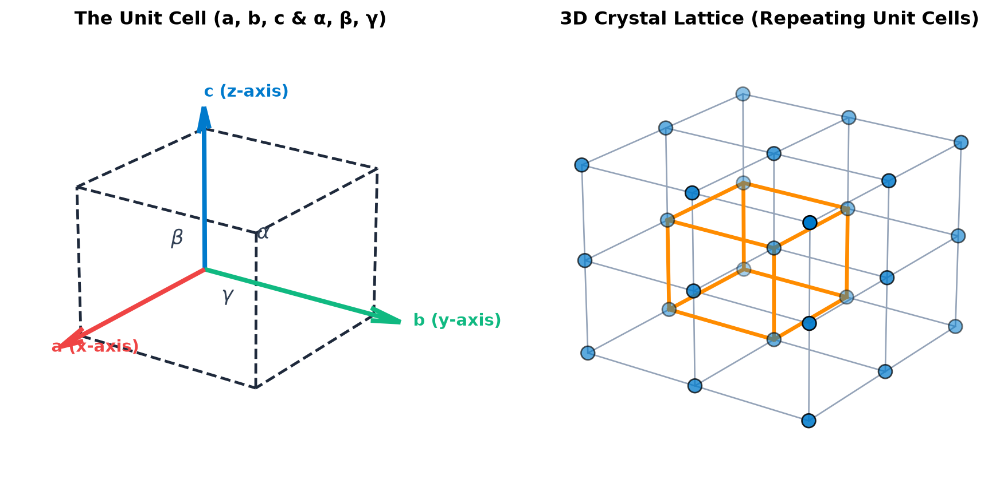
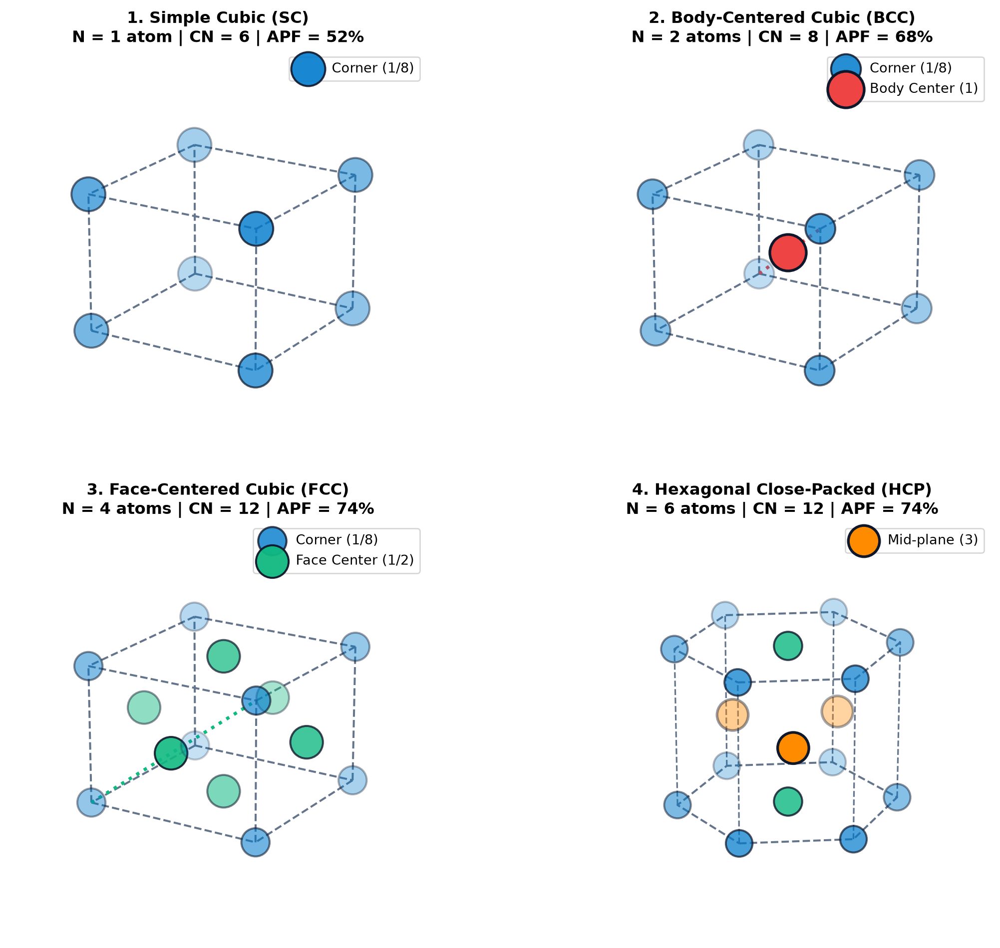
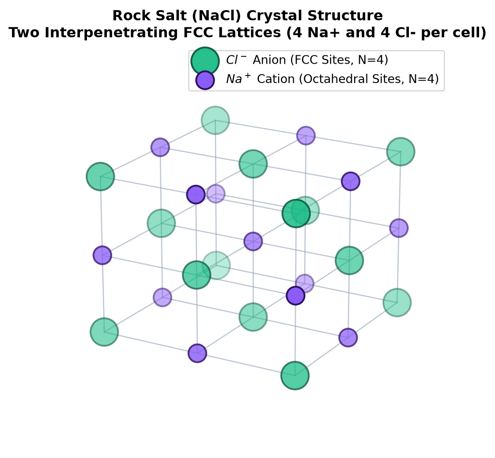
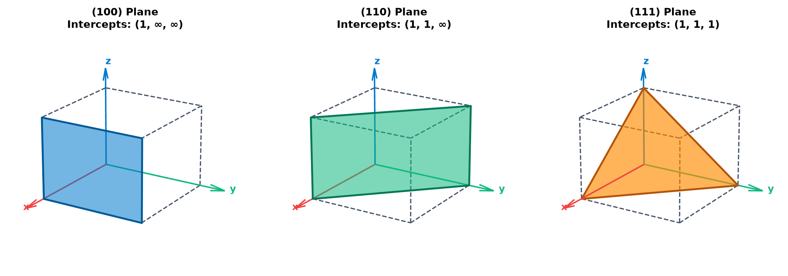

Materials Science Part I: Crystal Structures, Planes & Bragg’s Law
K-12 & Introductory Engineering: Atomic Packing, Mechanical Properties, and X-Ray Diffraction Foundations
Interactive STEM module covering Simple Cubic, BCC, FCC, HCP, Rock Salt, Atomic Packing Factor (APF), Miller Indices, and Bragg’s Law with Python 3D visualizations.
Educator & Student Guide: This module is Part I of our Planetary Materials & Diffraction series. Here, you will master how atoms stack in 3D space, how crystal geometry dictates whether a metal bends or shatters, and how atomic planes act as microscopic mirrors for X-rays. When you finish, proceed to Part II: Mars & Lunar Rover XRD Lab.
1. What is a Unit Cell?
Crystalline solids—from aerospace aluminum alloys to table salt (NaCl)—are built from atoms arranged in a repeating, three-dimensional pattern called a crystal lattice.
The Unit Cell is the smallest repeating building block of a crystal that captures its full symmetry and atomic arrangement. Stacking unit cells side-by-side in 3D space constructs the entire macroscopic material, much like stacking identical LEGO bricks.
Every unit cell is defined by six lattice parameters:
- Axial lengths: a, b, c (the lengths of the box edges, typically measured in Angstroms, 1\text{ \AA} = 10^{-10}\text{ m}, or nanometers).
- Interaxial angles: \alpha, \beta, \gamma (the angles between the axes). In a cubic system, a = b = c and \alpha = \beta = \gamma = 90^\circ.
2. How to Count Atoms & Calculate Atomic Packing Factor (APF)
Atoms inside a unit cell are shared with neighboring unit cells:
- Corner Atoms: Shared equally among 8 adjacent unit cells \rightarrow each corner contributes \frac{1}{8} of an atom.
- Face-Centered Atoms: Shared between 2 adjacent unit cells \rightarrow each face atom contributes \frac{1}{2} of an atom.
- Body-Centered (Interior) Atoms: Completely inside 1 unit cell \rightarrow contributes 1 full atom.
- Edge-Centered Atoms (in Ionic/Rock Salt): Shared among 4 unit cells \rightarrow contributes \frac{1}{4} of an atom.
The total number of effective atoms inside a cubic unit cell (N) is:
N = N_{\text{interior}} + \frac{N_{\text{face}}}{2} + \frac{N_{\text{corner}}}{8} + \frac{N_{\text{edge}}}{4}
Key Metrics Every Engineer Calculates
- Coordination Number (CN): The number of nearest-neighbor atoms touching any given atom. Higher CN generally means tighter packing.
- Atomic Packing Factor (APF): The fraction of the unit cell volume occupied by hard atomic spheres:
\text{APF} = \frac{V_{\text{atoms}}}{V_{\text{unit cell}}} = \frac{N \times \left(\frac{4}{3}\pi R^3\right)}{a^3}
3. The Four Primary Metallic Crystal Structures
Below are the 3D atomic arrangements generated in Python, followed by step-by-step derivations of their packing factors and their direct impact on material strength and ductility.
Show Python Code for 3D Crystal Structure Gallery (SC, BCC, FCC, HCP)
import matplotlib.pyplot as plt
import numpy as np
fig = plt.figure(figsize=(13, 10))
def draw_cube_frame(ax):
edges = [
([0,1], [0,0], [0,0]), ([0,0], [0,1], [0,0]), ([0,0], [0,0], [0,1]),
([1,1], [0,1], [0,0]), ([1,1], [0,0], [0,1]), ([0,1], [1,1], [0,0]),
([0,0], [1,1], [0,1]), ([0,1], [0,0], [1,1]), ([0,0], [0,1], [1,1]),
([1,1], [1,1], [0,1]), ([1,1], [0,1], [1,1]), ([0,1], [1,1], [1,1])
]
for e in edges:
ax.plot3D(e[0], e[1], e[2], color='#64748b', lw=1.5, ls='--')
ax.set_xlim([-0.2, 1.2]); ax.set_ylim([-0.2, 1.2]); ax.set_zlim([-0.2, 1.2])
ax.set_axis_off()
ax.view_init(elev=20, azim=32)
corners = np.array([[i, j, k] for i in [0, 1] for j in [0, 1] for k in [0, 1]])
# 1. Simple Cubic (SC)
ax1 = fig.add_subplot(221, projection='3d')
draw_cube_frame(ax1)
ax1.scatter(corners[:,0], corners[:,1], corners[:,2], s=650, color='#007acc', edgecolors='#0f172a', lw=1.5, alpha=0.9, label='Corner (1/8)')
ax1.set_title("1. Simple Cubic (SC)\nN = 1 atom | CN = 6 | APF = 52%", fontsize=12, fontweight='bold')
ax1.legend(loc='upper right', frameon=True)
# 2. Body-Centered Cubic (BCC)
ax2 = fig.add_subplot(222, projection='3d')
draw_cube_frame(ax2)
ax2.scatter(corners[:,0], corners[:,1], corners[:,2], s=500, color='#007acc', edgecolors='#0f172a', lw=1.5, alpha=0.85, label='Corner (1/8)')
ax2.scatter([0.5], [0.5], [0.5], s=750, color='#ef4444', edgecolors='#0f172a', lw=2, alpha=1.0, label='Body Center (1)')
# Draw body diagonal
ax2.plot3D([0, 1], [0, 1], [0, 1], color='#ef4444', lw=2.5, ls=':')
ax2.set_title("2. Body-Centered Cubic (BCC)\nN = 2 atoms | CN = 8 | APF = 68%", fontsize=12, fontweight='bold')
ax2.legend(loc='upper right', frameon=True)
# 3. Face-Centered Cubic (FCC)
ax3 = fig.add_subplot(223, projection='3d')
draw_cube_frame(ax3)
faces = np.array([
[0.5, 0.5, 0], [0.5, 0.5, 1],
[0.5, 0, 0.5], [0.5, 1, 0.5],
[0, 0.5, 0.5], [1, 0.5, 0.5]
])
ax3.scatter(corners[:,0], corners[:,1], corners[:,2], s=450, color='#007acc', edgecolors='#0f172a', lw=1.5, alpha=0.8, label='Corner (1/8)')
ax3.scatter(faces[:,0], faces[:,1], faces[:,2], s=600, color='#10b981', edgecolors='#0f172a', lw=1.5, alpha=0.95, label='Face Center (1/2)')
# Draw face diagonal
ax3.plot3D([1, 1], [0, 1], [0, 1], color='#10b981', lw=2.5, ls=':')
ax3.set_title("3. Face-Centered Cubic (FCC)\nN = 4 atoms | CN = 12 | APF = 74%", fontsize=12, fontweight='bold')
ax3.legend(loc='upper right', frameon=True)
# 4. Hexagonal Close-Packed (HCP)
ax4 = fig.add_subplot(224, projection='3d')
angles = np.linspace(0, 2*np.pi, 7)[:-1]
hx = np.cos(angles); hy = np.sin(angles)
# Draw top and bottom hexagons
for z in [0, 1]:
ax4.plot3D(np.append(hx, hx[0]), np.append(hy, hy[0]), [z]*7, color='#64748b', lw=1.5, ls='--')
ax4.scatter(hx, hy, [z]*6, s=400, color='#007acc', edgecolors='#0f172a', lw=1.5, alpha=0.85)
ax4.scatter([0], [0], [z], s=450, color='#10b981', edgecolors='#0f172a', lw=1.5, alpha=0.9)
for i in range(6):
ax4.plot3D([hx[i], hx[i]], [hy[i], hy[i]], [0, 1], color='#64748b', lw=1.2, ls='--')
# Mid-plane 3 interior atoms
mid_angles = np.array([np.pi/6, 5*np.pi/6, 3*np.pi/2])
mx = 0.55 * np.cos(mid_angles); my = 0.55 * np.sin(mid_angles)
ax4.scatter(mx, my, [0.5]*3, s=550, color='#ff8c00', edgecolors='#0f172a', lw=2, alpha=1.0, label='Mid-plane (3)')
ax4.set_xlim([-1.2, 1.2]); ax4.set_ylim([-1.2, 1.2]); ax4.set_zlim([-0.1, 1.1])
ax4.set_axis_off()
ax4.view_init(elev=22, azim=25)
ax4.set_title("4. Hexagonal Close-Packed (HCP)\nN = 6 atoms | CN = 12 | APF = 74%", fontsize=12, fontweight='bold')
ax4.legend(loc='upper right', frameon=True)
plt.tight_layout()
plt.show()
Structure-by-Structure Breakdown & Worked Math
- Atomic Touching Direction: Atoms touch directly along the cube edge. Therefore, a = 2R.
- Atoms per Unit Cell (N): 8 \text{ corners} \times \frac{1}{8} = 1\text{ atom}.
- Coordination Number (CN): 6 (each atom touches 6 neighbors along \pm x, \pm y, \pm z).
- APF Derivation: \text{APF} = \frac{1 \times \frac{4}{3}\pi R^3}{(2R)^3} = \frac{\frac{4}{3}\pi R^3}{8R^3} = \frac{\pi}{6} \approx 0.524 \text{ (52.4\%)}
- Real-World Examples & Properties: Almost 48% of a Simple Cubic cell is empty space, making it mechanically unstable. Only Polonium (\alpha\text{-Po}) crystallizes in SC at room temperature.
- Atomic Touching Direction: Corner atoms do not touch along the edge; they touch the central red atom along the body diagonal (which has length \sqrt{3}a). Since the body diagonal spans 4 atomic radii (R + 2R + R = 4R): \sqrt{3}a = 4R \implies a = \frac{4R}{\sqrt{3}}
- Atoms per Unit Cell (N): \left(8 \times \frac{1}{8}\right) + 1\text{ center} = 2\text{ atoms}.
- Coordination Number (CN): 8.
- APF Derivation: \text{APF} = \frac{2 \times \frac{4}{3}\pi R^3}{\left(\frac{4R}{\sqrt{3}}\right)^3} = \frac{\sqrt{3}\pi}{8} \approx 0.680 \text{ (68.0\%)}
- Real-World Examples & Mechanical Impact: Iron (\alpha\text{-Fe}), Tungsten (W), Chromium (Cr), Molybdenum (Mo). Because BCC lacks true close-packed planes, atoms require higher force to slide past one another (slip). Consequently, BCC metals have high strength and hardness, and exhibit a ductile-to-brittle transition at cold temperatures (famous for causing the Titanic’s steel hull to fracture in icy water).
- Atomic Touching Direction: Atoms touch along the face diagonal (length \sqrt{2}a = 4R): a = \frac{4R}{\sqrt{2}} = 2\sqrt{2}R
- Atoms per Unit Cell (N): \left(8 \times \frac{1}{8}\right) + \left(6 \text{ faces} \times \frac{1}{2}\right) = 1 + 3 = 4\text{ atoms}.
- Coordination Number (CN): 12.
- APF Derivation: \text{APF} = \frac{4 \times \frac{4}{3}\pi R^3}{(2\sqrt{2}R)^3} = \frac{\pi}{3\sqrt{2}} \approx 0.740 \text{ (74.0\%)}
- Real-World Examples & Mechanical Impact: Aluminum (Al), Copper (Cu), Gold (Au), Silver (Ag), Nickel (Ni). 74% is the maximum possible packing density for spheres of equal size! Because FCC has 12 close-packed slip systems (along the \{111\} planes), atomic layers glide smoothly over one another under stress. This makes FCC metals exceptionally ductile and malleable—ideal for bending into wires, stamping car body panels, or hammering into gold leaf without cracking.
- Stacking Sequence: While FCC stacks close-packed layers in an ABCABC pattern, HCP stacks them in an ABAB pattern. Ideal axial ratio: c/a = \sqrt{8/3} \approx 1.633.
- Atoms per Unit Cell (N): \left(12 \text{ corners} \times \frac{1}{6}\right) + \left(2 \text{ face centers} \times \frac{1}{2}\right) + 3 \text{ interior} = 2 + 1 + 3 = 6\text{ atoms}.
- Coordination Number (CN): 12 | APF: 0.740 \text{ (74.0\%)}.
- Real-World Examples & Mechanical Impact: Titanium (Ti), Magnesium (Mg), Zinc (Zn), Beryllium (Be). Even though HCP shares the same 74% packing density as FCC, its ABAB symmetry gives it only 3 primary slip systems (along the basal plane) compared to FCC’s 12. As a result, HCP metals are lightweight and strong, but much more brittle and harder to bend at room temperature than FCC metals.
4. Compound Example: Rock Salt (NaCl) Structure
Not all crystals are made of a single metal element! Many geological minerals found on Earth, the Moon, and Mars—such as Halite (NaCl, Rock Salt) and Periclase (MgO)—are ionic ceramics with two different ion sizes.
In the Rock Salt (NaCl) structure, large Chloride anions (Cl^-, ionic radius r_{Cl^-} = 1.81\text{ \AA}) form a Face-Centered Cubic (FCC) framework, while smaller Sodium cations (Na^+, ionic radius r_{Na^+} = 1.02\text{ \AA}) fit into the octahedral interstitial holes along every cube edge and at the very center of the unit cell.
- Cl^- Ions per Unit Cell: 8\text{ corners} \times \frac{1}{8} + 6\text{ faces} \times \frac{1}{2} = 4\text{ } Cl^-\text{ ions}.
- Na^+ Ions per Unit Cell: 12\text{ edges} \times \frac{1}{4} + 1\text{ body center} = 4\text{ } Na^+\text{ ions}.
- Total Stoichiometry: 4\text{ } NaCl formula units per unit cell (1:1 ratio), with a Coordination Number of 6 for both ions.

5. Crystallographic Planes & Miller Indices (hkl)
When X-rays enter a crystal, they bounce off parallel sheets of atoms called crystallographic planes. Materials scientists label the orientation of these planes using a 3-number code called Miller Indices (hkl).
3-Step Recipe to Find Miller Indices (hkl)
- Find the Intercepts: Identify where the plane intersects the x, y, z axes in fractions of the unit cell length (a, b, c). If a plane is parallel to an axis, its intercept is \infty.
- Take Reciprocals: Flip each intercept upside down (\frac{1}{x}, \frac{1}{y}, \frac{1}{z}). Note that \frac{1}{\infty} = 0.
- Clear Fractions: Multiply by the smallest common denominator if needed, and enclose in parentheses (hkl) without commas.
- (100) Plane: Intercepts at (1, \infty, \infty) \rightarrow Reciprocals (1, 0, 0) \rightarrow \mathbf{(100)}. (Front face of the cube).
- (110) Plane: Intercepts at (1, 1, \infty) \rightarrow Reciprocals (1, 1, 0) \rightarrow \mathbf{(110)}. (Slices diagonally across the BCC body center).
- (111) Plane: Intercepts at (1, 1, 1) \rightarrow Reciprocals (1, 1, 1) \rightarrow \mathbf{(111)}. (The primary close-packed slip plane in FCC metals like Aluminum, Silicon, and Gold!).

Interplanar Spacing (d_{hkl}) and Bragg’s Law
The perpendicular distance d_{hkl} between adjacent parallel (hkl) planes in a cubic crystal of lattice constant a is:
d_{hkl} = \frac{a}{\sqrt{h^2 + k^2 + l^2}}
When an X-ray beam of wavelength \lambda (for standard Copper K\alpha X-ray tubes, \lambda = 1.5406\text{ \AA}) strikes these planes at an incident angle \theta, the lower beam travels an extra path length of 2d_{hkl}\sin\theta. Constructive interference (a bright diffraction peak!) occurs when Bragg’s Law is satisfied:
n\lambda = 2d_{hkl}\sin\theta
6. Interactive Crystal & Bragg’s Law Simulator
Use this live simulator to select a real-world engineering material, adjust the Miller indices (hkl), and see how the unit cell geometry determines theoretical density and exact X-ray diffraction peak angles (2\theta).
🔬 Live Crystal Lattice & XRD Peak Calculator
Crystal System
FCC
N = 4 atoms | CN = 12
Packing Factor (APF)
74.0%
High Ductility (12 slip sys)
Lattice Constant (a)
4.04 Å
Density: 2.71 g/cm³
Plane Spacing (d_hkl)
2.34 Å
XRD Peak (2θ): 38.47°
7. Summary Comparison Table for Educators & Students
| Crystal Structure | Atoms / Cell (N) | Coordination (CN) | Lattice Constant (a) | Packing Factor (APF) | Mechanical Behavior & Examples |
|---|---|---|---|---|---|
| Simple Cubic (SC) | 1 | 6 | 2R | 52.4\% | Very open & weak (\alpha\text{-Po}) |
| Body-Centered Cubic (BCC) | 2 | 8 | \frac{4R}{\sqrt{3}} | 68.0\% | High strength, harder slip (\text{Fe, W, Cr}) |
| Face-Centered Cubic (FCC) | 4 | 12 | 2\sqrt{2}R | 74.0\% | Highly ductile, 12 slip systems (\text{Al, Cu, Au}) |
| Hexagonal Close-Packed (HCP) | 6 | 12 | 2R (c \approx 1.633a) | 74.0\% | Lightweight, limited slip (\text{Ti, Mg, Zn}) |
| Rock Salt (NaCl) | 4\text{ Na}^+ + 4\text{ Cl}^- | 6 | 2(r_{\text{Na}^+} + r_{\text{Cl}^-}) | \sim 67\% | Brittle ionic ceramic, cleaves on (100) |